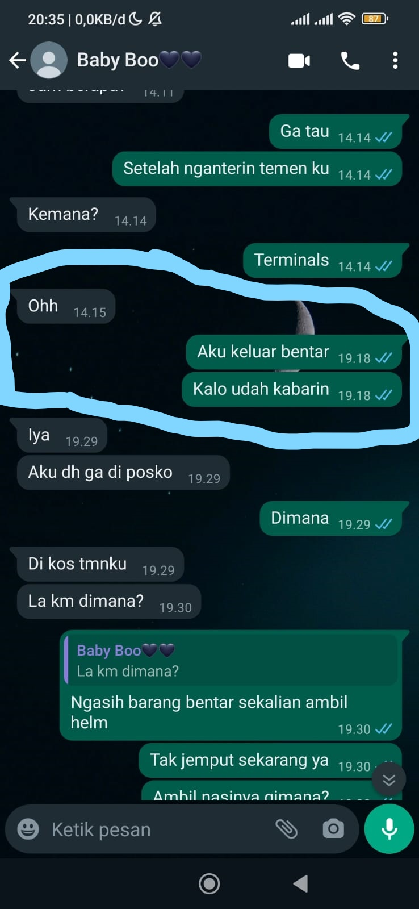

ini waktu awalan kita chatan yang akhirnya bikin chatan terus terusan
Terus ayang ke kontrakan dan kita keluar cari akrilik
abis itu aku di tawarin jadi mc oprek.tapi aku bilang kalau mc pasangannya ayangg aku baru mau.terus karena nopal acc waktu itu aku ajakin ayang deh buat jadi mc oprek hehehe
Ini waktu pertama kali ayang curhat ke aku dan aku seneng banget dulu. karena ayang udah mau curhat bke aku yg artinya aku udah selangkah lebih deket ke ayang
ini waktu pertama kali aku ngasih pap ke ayang karena kehujanan terus neduh di bawah flyover
ini ayang bales pap juga waktu momen ayang mati listrik di mbah dan waktu itu kita mau latian mc
ini waktu aku mintol ayang nyariin kawul hehehe ayangg mau bantu aku nyariin
ini ayang ucapin aku ultah. karena ada momennya aku berusaha ngajakin ayang nonton berduaa dan ayangg mau
ini waktu pertama kali aku kerumah ayang buat jemput ayangg nonton
ini ayangg curhat ke aku yg kedua kalinya akuu kasihan ke ayangg karena ayang di gituin apalagi waktu udah jadian aku baca dm ayangg sama itu orang jadi makin sakit hati ayangg pernah di gituin
ini aku seneng banget karena ayang beraniin diri buat nyari tau dan keluar dari hubungan yg selama itu nyakitin ayangg
ini waktu kita mau berangkat makrab bareng hehehehe
ini waktu aku ngajak keluar ayang beli kabel charger biar ayang bisa ngecharger karena punyaku type c sedangkan ayang micro
ini ayang dulu pernah post ini aku inget bangett, dan aku juga ngerasa seneng chat kita ayang post hehehehe, aku ngerasa kita lebih deket waktu ayangg post itu
ini waktu aku nyoba confess ke ayangg, heheheheh waktu itu baru berani nyoba di wa
ini juga pembahasan lanjutan dari yg aku confess
ini waktu pertama kali ayangg nyanyiin akuu, akuu seneng bangett hehehehe pertama kali di nyanyiin ayangg

ini waktu aku abis ngajak ayangg ketemu dan confess langsung di minum semarang dan ayangg mau nerima akuu, senengg bangett di terima ayangg

ini foto waktu kita makrab dan waktu itu aku sering nempel sama ayangg hehehehe
ini foto waktu kita cakra dan kita udahh jadian jugaa